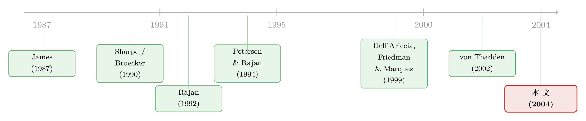

银行的「信息」，凭什么是一道护城河？——当外资来了，本地银行手里反而只剩下「坏客户」
本文读的是 Dell'Ariccia & Marquez (2004, Journal of Financial Economics)：银行私下掌握的客户信息，因为「说不出口、传不出去」，把客户变成了它的「俘虏」。文章用一个简洁的博弈模型证明——信息越不对称的市场，利差越高、被放贷的客户质量反而越差；一旦低成本的外来竞争者杀进来，本地银行会把信贷「往俘虏里收」（flight to captivity），最后手里留下的，恰恰是质量更低、却更跑不掉的那批客户。这一框架解释了金融自由化里一个长期没被讲清的现象：外资专挑大客户、优质客户去抢，可小客户、本地客户反而也跟着受益。
1 一个看似矛盾的现象
先讲一件让政策研究者挠头的事。
过去二三十年，新兴市场和转型经济体陆续放开了银行业的门槛，外资银行成片地涌入。它们来了之后，做的生意非常有「挑食」的特点：集中在批发银行业务（wholesale banking）、集中在给大企业、信息透明的优质客户放贷（见 Berger et al., 2001；Clarke et al., 2001）。这一点不难理解——外来者人生地不熟，当然要挑那些「看得懂」的客户下手。
可奇怪的是，按理说外资只抢走了优质大客户，那些被冷落的小客户、本地客户应该过得更差才对。但数据偏偏相反：小客户也跟着受益了，既更容易借到钱，利差也降了（Martinez Peria & Mody, 2002；Clarke et al., 2002；Laeven, 2003）。
这就奇怪了。外资明明没怎么碰小客户，凭什么小客户的日子也好过了？
更进一步，一个自然的问题是：本地银行被抢走了优质客户之后，它手里到底剩下了什么？是变好了，还是变坏了？
这篇 2004 年发表在 JFE 上的论文，正是冲着这两个问题去的。而它给出的答案，藏在一个被传统模型长期忽略的维度里——不是「质量」，而是「信息」。
2 核心张力：信息让客户变成了「俘虏」
传统的代理成本（agency cost）文献，讲的几乎都是一个「撇脂」（cream-skimming）的故事：客户质量是公开可观测的，于是优质客户去找不需要监督的市场化融资，劣质客户才留给银行。在这套逻辑里，质量是唯一的轴。
但本文作者抓住的是另一根轴。银行在放贷过程中，会通过尽职调查、监控、看账本，积累起关于某个客户的私人信息（private information）。这种信息有一个要命的性质：它无法可信地传递给外部人。银行说「这家公司其实很好」，外部银行凭什么信？正因为传不出去，这份信息就在银行和客户之间生成了一种「专属性」（lender-client specificity）。
这种专属性，反过来把客户「锁」住了。一个被本地银行摸得门儿清的好客户，想去外面银行借钱，会遭遇什么？外部银行看不清他的底，会担心——「来找我的，会不会都是被原来那家银行甩出来的次品？」这正是逆向选择（adverse selection）的逻辑。于是外部银行要么不敢报价，要么报一个很高的利率把风险溢价加进去。结果，这个好客户其实走不掉，他成了原银行的「俘虏」（captive borrower）。
这里有一个很反直觉的点要先记住：让客户被俘虏的，不是「质量差」，而是「信息不对称大」。一个质量平平、但外人完全看不懂的客户，可能比一个质量很高、但财报透明的客户更「跑不掉」。质量和俘虏程度，是两个不同的东西。这是全文的钥匙。
把这条主线立住，剩下的三个结论几乎是顺水推舟。
3 模型设定：把「信息」和「成本」拆成两根独立的轴
这是一篇彻头彻尾的理论论文，模型简洁得近乎优雅，值得一步一步拆开看。
借款人。 经济中有一个连续统的企业家，每人手里一个项目，需要 $1 的资本，自己没钱，必须找银行借。项目以概率 \(\theta\) 产出 \(R\)，以概率 \(1-\theta\) 产出 \(0\)。这个产出是双方可观测、可签约的，但成功概率 \(\theta\) 在签约前谁都不知道。\(\theta\) 在 $[0,1]$ 上均匀分布，平均成功概率 \(\bar\theta = 1/2\)。
为保证均衡里确实会发生放贷，假设 \(R\bar\theta > 1\)；同时 \(R\) 有上界（论文举例 \(R \le 10\)，意味着平均回报率 500%），这样才会有足够多的负 NPV 项目存在，逆向选择问题才不会被「人人都是好项目」给消解掉。
两根轴。 每个借款人由两个参数刻画：
- 信用质量 \(\theta\)——天然地理解为「质量」；
- 所在市场分段的「未知比例」 \(\lambda\)——理解为逆向选择问题的反向度量。
市场由一个连续统的分段（segment）组成，每个分段以 \(\lambda\) 为特征：其中比例 \(\lambda\) 的借款人，任何银行都不了解其类型；比例 \(1-\lambda\) 的借款人，只有某一家特定银行了解。\(\lambda\) 越大，信息不对称越小，本地银行的信息优势越弱。
两个银行。 这是模型最干净的设计——它把「信息优势」和「成本优势」拆成了两个独立的银行：
- 银行 1（informed，知情者）：在每个分段里，它完美了解比例 \(1-\lambda\) 的客户。资金成本归一化为 \(1\)。
- 银行 2（uninformed，无知者）：对个体客户一无所知，但资金成本为 \(\delta \in [1, \infty)\)。
可以把银行 1 想成信息更好的本地在位者（incumbent），把银行 2 想成有成本优势、但人生地不熟的外来进入者（entrant）。论文只考虑 \(\delta \ge 1\)，因为 \(\delta < 1\) 时银行 2 总能靠成本碾压把整个未知市场吃下，没有讨论价值。
博弈时序。 在每个分段里，竞争分两个阶段：
- 两家银行同时对各自不了解的「未知池」报一个利率（这个池包括天生未知的 \(\lambda\)，加上任何被拒/想换银行的人）。利率从集合 \([0, R] \cup \{D\}\) 中选，\(D\) 代表拒贷。
- 观察到所有报价后，银行 1 对它了解的老客户报一个利率——这个利率可以是依类型而定的（type-contingent）。
借款人最后行动，选利率最低的那家。
3.1 关键一步：留客门槛 θ*
用逆向归纳法（backward induction）解。先看第二阶段：银行 1 要不要留住一个它了解的、类型为 \(\theta\) 的老客户？
只要银行 2 在报价，银行 1 就只需把利率压到不高于 \(r_2\) 就能留人。于是被留住的老客户都被收取一个匹配利率 \(r_{1\theta} = r_2\)。而银行 1 愿意留人的条件是这笔贷款不亏——它对一个类型 \(\theta\)、利率 \(r\) 的客户的期望利润是 \(\theta r - 1\)。令其非负，就得到了那条决定一切的质量门槛：
$$\theta^* \equiv \frac{1}{r_2}$$
也就是说，银行 1 会留住所有 \(\theta \ge \theta^* = 1/r_2\) 的老客户，把低于门槛的（注定亏损的）拒之门外。而如果银行 2 干脆不报价，银行 1 就可以毫无顾忌地对老客户收最高利率 \(R\)，门槛随之降到 \(\theta = 1/R\)——这意味着它能留下质量更差的客户。
把这两种情形按「银行 2 是否出价」加权，就得到了全文最核心的一个表达式——被知情银行融资的边际客户的期望质量：
这条式子看上去平平无奇，却把三个结论全装在里面了。它说的是：知情银行手里那个「最差也能接受」的边际客户，质量到底是高是低，完全取决于外部竞争者 \(r_2\) 报得有多狠、以及它出不出价。
3.2 均衡的三个区域
第一阶段两家银行同时为未知池报价。这里出现了一个银行竞争模型里的经典结果：在「真正竞争」的参数区间里，纯策略均衡不存在，均衡是混合策略（mixed strategies）。这一点 Broecker (1990)、von Thadden (2002) 都在各自模型里证过，作者早先的 Dell'Ariccia, Friedman & Marquez (1999) 更是直接证明了此类模型纯策略均衡的不存在性。
直觉是：谁的报价被对手精确预判，对手就能略微「撬一下」（slightly undercut）把客户全抢走，所以双方只能用随机化的报价互相隐藏。
论文的 Proposition 1 把均衡按两个临界值划成三块：
$$\bar\lambda(\delta) = \frac{2\delta - 1}{3 - 2\delta}, \qquad \underline\lambda(\delta) = \frac{2\delta - 1}{R^2 - 1 - 2\delta(R-1)}$$
- \(\lambda > \bar\lambda\)（信息优势太小）：两家都报 \(r = 1/\bar\theta\)，银行 1 拿不到任何未知客户，银行 2 靠成本优势把市场全吃下。此时银行 2 是「可竞争的垄断者」（contestable monopolist）。
- \(\lambda < \underline\lambda\)（信息优势极大）：银行 2 干脆不报价。银行 1 收垄断利率 \(r_1 = R\)，给所有未知客户和所有够格的老客户放贷。
- \(\underline\lambda < \lambda < \bar\lambda\)（中间区域）：两家用混合策略真刀真枪地竞争。无知的银行 2 期望利润为零，知情的银行 1 在所有客户（无论了解与否）上都赚到严格为正的期望利润。
注意这个反直觉的结论：信息优势让银行 1 不仅在老客户身上赚钱，还在它一无所知的客户身上也赚到了钱。原因是，银行 1 的信息优势让银行 2 不敢太凶地报价（怕接到一手柠檬），这份「克制」反过来抬高了银行 1 在全部客户上的利润。信息优势，是一道实打实的护城河。
4 三个结论：护城河如何重塑了信贷的版图
模型立好了，三个结论就像多米诺骨牌一样倒下来。我们只看真正有竞争的中间区域——两端要么只有一家放贷，信贷配置的效应是平凡的。
4.1 结论一：信息不对称越大，利差越高、客户质量越差
这是 Proposition 2。它说：对 \(\underline\lambda < \lambda < \bar\lambda\)，
$$\frac{\partial E[\theta^*]}{\partial \lambda} > 0, \qquad \frac{\partial E[r_1]}{\partial \lambda} < 0, \quad \frac{\partial E[r_2]}{\partial \lambda} < 0.$$
直白地说：随着信息不对称变小（\(\lambda\) 变大），无知的银行 2 不再那么害怕被塞一手柠檬，于是敢更凶地报价，\(E[r_2]\) 下降；它出价的概率 \(p_2\) 也上升。银行 2 一凶，逼得银行 1 也得跟着压价，\(E[r_1]\) 随之下降。利率全面走低。
更关键的是边际客户质量 \(E[\theta^*]\) 随 \(\lambda\) 上升——也就是说，在信息不对称更大的分段（\(\lambda\) 小），银行 1 反而会去给质量更差的客户放贷。为什么？因为在那种分段里它有定价权，能从边际客户身上榨出利润，于是乐得把门槛放低。
这就推出了一个漂亮的横截面（cross-sectional）含义：知情银行的投资组合，在越「俘虏」的分段里，平均质量越低。低质量但高俘虏度的客户能拿到信贷，而高质量但低俘虏度的客户反而可能被拒、被迫转向其他融资。质量不再是放贷的唯一标准——俘虏程度才是利润的来源。
这恰好给 Petersen & Rajan (1995) 的经验发现提供了理论地基。他们发现，在更集中的信贷市场里借款人反而更容易拿到钱，并用「市场势力让银行能榨取未来租金」来解释。本文则说：银行的市场势力根本上来自信息结构，而非外生给定的集中度。（关于关系型贷款如何被算进一国信贷的总账，可参见《银行为什么舍得先亏本拉客？》。）
4.2 结论二：飞向俘虏（flight to captivity）
现在让外来竞争者变强——也就是让银行 2 的成本 \(\delta\) 下降。会发生什么？
当银行 1 被迫收缩贷款组合时，它会在哪儿撤、在哪儿守？答案是：在不那么俘虏的分段（\(\lambda\) 大）里撤得多，在更俘虏、更赚钱的分段（\(\lambda\) 小）里守住更大的份额。 作者把这个再配置叫做「飞向俘虏」（flight to captivity）。
这个名字是相对于宏观金融里耳熟能详的「飞向质量」（flight to quality, Lang & Nakamura, 1995）起的。飞向质量说的是衰退时债权人把钱从高代理成本的客户那儿撤走、转向优质客户。本文的飞向俘虏则不同：当外部竞争或资产负债表受冲击逼着银行收缩时，它撤离的标准不是质量，而是俘虏度——它会丢掉那些「外人也抢得动」的客户，攥紧那些「跑不掉」的客户。
为什么？因为利润同时取决于两件事：客户质量（还款概率），以及对手在这个客户身上面临的逆向选择有多大。在没有信息摩擦的情形下，质量本身对银行利润毫无含义——是逆向选择这道摩擦，让「俘虏」变成了能变现的租金。所以当银行要保住最赚钱的客户时，它保的就是最俘虏的那批。
顺带一提，越竞争的分段里的贷款，也恰恰是银行组合里最具流动性的资产——因为它们能以接近真实价值的价格卖掉。这条暗线把信息、竞争和流动性串在了一起。
4.3 结论三：反转——外资来了，本地银行手里反而只剩坏客户
到这里，开头那个谜题的答案才真正浮现，而且带着一个漂亮的反转。
前两个结论里，质量 \(\theta\) 和俘虏度（\(\lambda\) 的反向）是两根独立的轴。但如果这两者强负相关呢？也就是：信息不对称越大的分段，客户质量恰好越低。
这并非牵强的假设——它对应着一类很现实的市场结构。这时，外来的低成本银行 2 会去抢谁？它会去抢那些低 \(\lambda\)（信息不对称小）、因而也更优质的客户，因为这些客户它看得懂、敢报价。于是反转出现：外资把优质客户撇走之后，留给本地知情银行的，主要就是那些更俘虏、但风险也更高的客户。
结果是：无知者竞争力的上升，竟然会让知情银行的整体组合质量变差。 外资进入非但没有逼着本地银行「优中选优」，反而把本地银行往「坏客户」的方向推。
而那个开头的谜题，也一并解开了：外资进入压低了 \(\delta\)，逼得两家银行在低 \(\lambda\) 分段全面降息——所以小客户、信息透明的客户即便没被外资直接服务，也享受到了利率下降的好处（因为本地银行被迫在这些分段降价应战）。信息结构决定了不同客户群面前那道进入壁垒的高低，从而把市场切成了「外资 vs 本地」两半。作者说，这个含义是他们模型独有的，且与现有证据吻合。
5 文献脉络
把这篇论文放回它所在的那条研究链上，会看得更清楚。
故事的源头是银行贷款的「特殊性」。James (1987) 最早提供证据：宣布拿到一笔银行贷款，会带来正的股价反应——银行的钱和市场上的钱不一样。Lummer & McConnell (1989) 在贷款续期上给出了类似证据。这条线告诉我们：银行在放贷里积累了某种别人没有的东西。
那这「东西」是什么、又如何转化成银行的势力？借款人俘虏与套牢（hold-up） 这条线给出了答案。Sharpe (1990) 和 Rajan (1992) 证明，即便面临竞争威胁，知情银行也能从信息里攫取租金——客户被信息「套牢」了。von Thadden (2002) 进一步把这件事放进「赢家诅咒」（winner's curse）的框架里精细化。
与此并行的，是竞争建模的技术线。Broecker (1990) 把信用甄别（credit-worthiness tests）放进银行间竞争，揭示了混合策略均衡。作者自己的 Dell'Ariccia, Friedman & Marquez (1999) 则证明信息不对称会成为进入银行业的壁垒，并给出纯策略均衡不存在的证明——这正是本文第一阶段博弈的方法论根基。

经验一侧，Petersen & Rajan (1994, 1995) 的关系型贷款研究、Berger & Udell (1995) 关于关系长短与抵押要求的发现，都在反复确认「银行在关系中解决信息问题」。但这些工作几乎都站在企业一侧看问题，没有去问：当银行受到约束、被迫调整时，信贷会如何在客户之间重新配置？
这篇论文的位置，正是这个空档。它不研究单个关系，而是研究整个组合的横截面与再配置：当外部冲击（一个低成本对手的进入、或货币政策收紧带来的资金成本上升）来临时，知情银行的组合会沿着「俘虏度」这根轴重排。它既给 Petersen-Rajan 的外生市场势力提供了一个内生的微观基础，又把分析延伸到了「冲击后组合如何变化」。（这条「信息让定价反直觉」的线索，后来在《信息越多，利率反而越低？》、《两种技术，两种命运》 里还有延续。）
6 评论与延伸（Q&A + 研究方向）
(a) 几个可能的疑问
Q：「俘虏度」和「质量」到底有什么区别？为什么非要拆成两根轴？
质量 \(\theta\) 是客户的还款概率，是客户的内在属性；俘虏度则是对手银行在这个客户身上面临的逆向选择有多大，是一个相对的、关于信息分布的属性。一个高质量但财报透明（高 \(\lambda\)）的客户，外人看得懂，所以不俘虏；一个平庸但完全不透明（低 \(\lambda\)）的客户，外人不敢碰，反而很俘虏。本文的全部新意，就在于证明真正驱动银行组合和利差的，是后者而非前者——而传统代理成本文献只盯着前者。
Q：为什么信息优势能让银行在它「一无所知」的客户身上也赚到钱？这听起来矛盾。
关键在于战略互动。银行 1 对部分客户有信息，这让银行 2 担心未知池里混进了被银行 1 拒掉的柠檬，于是银行 2 不敢凶报价。银行 2 这份「克制」抬高了整个未知池的均衡利率，银行 1 顺势在未知客户上也分到了正利润。利润不是来自它知道什么，而是来自对手怕它知道什么。
Q：混合策略均衡是不是模型的「技术性产物」，对结论无关紧要？
不是。混合策略恰恰是「真正竞争」区域的本质特征——它意味着利率本身是随机的，于是「银行 2 出价的概率 \(p_2\)」「期望利率 \(E[r_2]\)」这些量才有意义，而结论一的全部比较静态（\(\partial E[\theta^*]/\partial\lambda > 0\) 等）都是建立在对这些随机报价取期望之上的。Broecker (1990)、Dell'Ariccia et al. (1999) 都表明这是该类模型的稳健特征，不是人为设定。
Q：「飞向俘虏」和「飞向质量」会不会其实是一回事？
在结论一、二里，它们是两件不同的事：飞向质量按 \(\theta\) 撤退，飞向俘虏按 \(\lambda\) 撤退。只有在结论三的特殊情形——质量与俘虏度强负相关时，二者才会指向相反的方向，并产生那个反转（外资进入恶化本地组合）。论文还点出，货币紧缩抬高银行 1 的资金成本时，它会同时减少对低质量客户的放贷（像飞向质量），而这种减少在不那么俘虏的分段里更明显（这才是飞向俘虏）。两种力量是叠加的。
Q：结论三依赖「质量与俘虏度强负相关」，这个前提现实吗？
这是全文最强、也最该被质疑的一个假设。它意味着「越不透明的客户质量越差」。在某些市场（比如刚起步、无审计、无征信的小微企业群）也许成立，但在另一些市场未必——有大量优质却不透明的家族企业。论文诚实地把这个结论标为「条件性」的（if a strong negative correlation exists），没有把它当普适结论叫卖。这也是后续经验检验最该聚焦的地方。
Q：这个模型能解释货币政策的银行贷款渠道吗？
能，而且角度很新。在 Kashyap & Stein (2000) 的银行贷款渠道里，紧缩减少银行贷款供给。本文则说：紧缩抬高银行 1 相对资金成本后，它优先砍掉的是低质量、且不那么俘虏的客户——所以贷款收缩在「俘虏度低」的分段里更剧烈，并且会通过利率传导到借款人。这把货币政策的分配效应（distributional effect）落到了「信息结构」这根轴上。（相关的「股本—货币政策」暗线，可参见《银行不缺钱，却放不出款》。）
(b) 几个可能的研究问题与提案
1. 把「飞向俘虏」拿到公司债市场去检验。
【经济故事】本文是纯理论。但它的核心预测——冲击来临时，银行/中介把组合往「外人更难定价」的资产收——在公司债的承销与做市里有直接对应：当流动性收紧，交易商是不是更倾向于守住那些信息不对称大、自己有定价优势的券？ 【可行性】中。可用 TRACE 逐笔成交 + Mergent FISD 发行特征，以 2008、2020 等流动性冲击为事件窗，用券层面的「信息不对称代理」（评级离散度、分析师覆盖、发行人透明度）做横截面。难点在于把「俘虏度」干净地与「质量」剥离——需要一个不依赖质量的信息不对称度量。
2. 外资银行进入的「分段异质」检验。
【经济故事】模型预测：外资最有效地抢走的，是信息劣势最小（高 \(\lambda\)）的客户；本地银行的组合会往低 \(\lambda\)、可能也更差的客户收缩。这是一个可证伪的横截面预测。 【可行性】高。许多国家有银行—企业匹配的信贷登记（credit registry）数据（如阿根廷、巴西、印度）。以一次外资进入/自由化为冲击，用 DiD 比较高/低信息不对称行业里本地银行组合质量的变化。识别关键是找到外生的进入时点（监管放开）。这是把本文从理论推向经验的最直接一步。
3. IT/征信技术如何改变「俘虏」这道护城河。
【经济故事】本文的护城河来自「私人信息传不出去」。可一旦征信系统、开放银行、信息共享平台让信息能被可信传递，\(\lambda\) 的有效值就被外生抬高了，护城河被填平。这预测：信息共享制度上线后，利差下降、且本地在位者组合的俘虏租金缩水。 【可行性】中。可利用各国征信局（credit bureau）设立或信息共享法案的时点做面板。挑战在于信息技术同时改变了多个边际，需要小心把「俘虏度下降」与「整体甄别能力上升」分开。
4. 把流动性那条暗线显式建模并检验。
【经济故事】论文顺手提到：越竞争分段的贷款越「可卖」（接近真实价值）。这暗示银行组合的流动性结构内生于信息分布。值得问：贷款的二级市场流动性，是不是系统性地随借款人信息不对称下降？ 【可行性】中。可用银团贷款二级市场（如 LSTA/Loan Pricing）的买卖价差作为贷款流动性代理，对借款人信息不对称做横截面回归。识别上需处理「质量」与「信息」的共线性。
7 我的判断
先说贡献。这篇论文最漂亮的地方，是用一个极简的两银行博弈，把「信息不对称」从「质量」里干净地拆了出来，并证明前者才是驱动信贷配置的主轴。「飞向俘虏」这个概念，是对宏观金融里「飞向质量」的一个真正原创的补充，而且它一举解释了金融自由化里那个让人困惑的经验事实——外资挑大客户，小客户却也受益。能用一页纸的模型同时讲清横截面（结论一）、再配置（结论二）和反转（结论三），这是理论工作的功力。
但要诚实地说几点保留。其一，最吸睛的结论三依赖「质量与俘虏度强负相关」这个外生假设，模型本身并不告诉我们这个相关性从何而来、有多普遍——它更像是把现实的某个特征「喂」进了模型，而非从模型里长出来。其二，模型是静态两阶段博弈，关系型贷款最本质的「跨期积累信息」被压缩掉了；真实世界里的俘虏是慢慢长出来的，而这里它是一次性给定的 \(1-\lambda\)。其三，整篇没有任何经验检验，所有「与证据吻合」都是叙述性的——这在 2004 年的理论论文里无可厚非，但二十年后回看，这条线最缺的恰恰是用信贷登记数据对「飞向俘虏」的直接识别。
我最想看到的后续，是有人拿一国银行—企业匹配的微观数据，围绕一次干净的外资进入冲击，把结论二和结论三分别地检验出来：本地银行的组合，究竟是按质量收缩，还是按俘虏度收缩？这两者在数据里是能掰开的——只要你有一个不依赖质量的信息不对称度量。谁能把这把尺子造出来，谁就能给这篇优雅的理论盖上经验的章。
参考文献
Broecker, T. (1990). Credit-worthiness tests and interbank competition. Econometrica 58(2), 429–452.
Berger, A., Udell, G. (1995). Relationship lending and lines of credit in small firm finance. Journal of Business 68(3), 351–381.
Dell'Ariccia, G., Friedman, E., Marquez, R. (1999). Adverse selection as a barrier to entry in the banking industry. RAND Journal of Economics 30(3), 515–534.
Dell'Ariccia, G., Marquez, R. (2004). Information and bank credit allocation. Journal of Financial Economics 72(1), 185–214.
James, C. (1987). Some evidence on the uniqueness of bank loans. Journal of Financial Economics 19(2), 217–235.
Kashyap, A., Stein, J. (2000). What do a million observations on banks say about the transmission of monetary policy? American Economic Review 90(3), 407–428.
Lang, W., Nakamura, L. (1995). 'Flight to quality' in banking and economic activity. Journal of Monetary Economics 36(1), 145–164.
Lummer, S., McConnell, J. (1989). Further evidence on the bank lending process and the capital market response to bank loan agreements. Journal of Financial Economics 25(1), 99–122.
Petersen, M., Rajan, R. (1994). The benefits of firm–creditor relationships: evidence from small business data. Journal of Finance 49(1), 3–38.
Petersen, M., Rajan, R. (1995). The effect of credit market competition on lending relationships. Quarterly Journal of Economics 110(2), 407–443.
Rajan, R. (1992). Insiders and outsiders: the choice between informed and arm's-length debt. Journal of Finance 47(4), 1367–1400.
Sharpe, S. (1990). Asymmetric information, bank lending, and implicit contracts: a theoretical model of customer relationship. Journal of Finance 45(4), 1069–1087.
von Thadden, E.-L. (2002). Asymmetric information, bank lending and implicit contracts: the winner's curse. Unpublished working paper, Université de Lausanne.